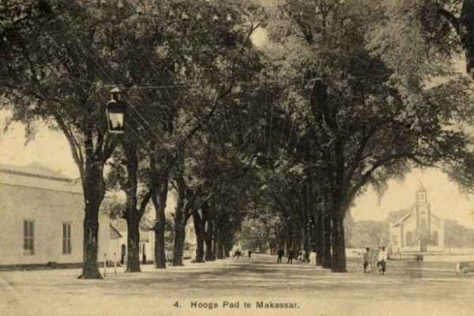
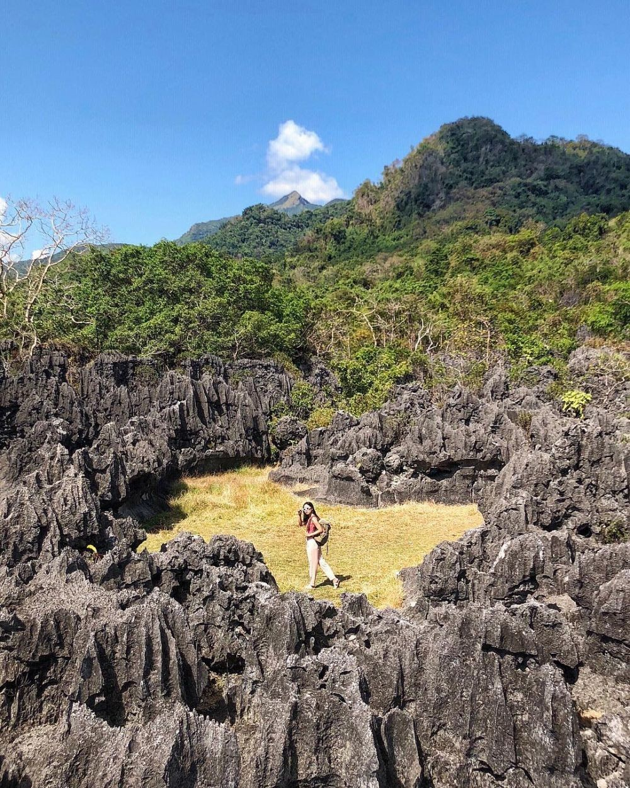

Sejarah

Nama Makassar sudah disebutkan dalam pupuh 14/3 kitab Nagarakretagama karya Mpu Prapanca pada abad ke-14, sebagai salah satu daerah taklukkan Majapahit. Walaupun demikian, Raja Gowa ke-9 Tumaparisi Kallonna (1510-1546) diperkirakan adalah tokoh pertama yang benar-benar mengembangkan kota Makassar. Ia memindahkan pusat kerajaan dari pedalaman ke tepi pantai, mendirikan benteng di muara Sungai Jeneberang, serta mengangkat seorang syahbandar untuk mengatur perdagangan.
Pada abad ke-16, Makassar menjadi pusat perdagangan yang dominan di Indonesia Timur, sekaligus menjadi salah satu kota terbesar di Asia Tenggara. Raja-raja Makassar menerapkan kebijakan perdagangan bebas yang ketat, di mana seluruh pengunjung ke Makassar berhak melakukan perniagaan disana dan menolak upaya VOC (Belanda) untuk memperoleh hak monopoli di kota tersebut.
Selain itu, sikap yang toleran terhadap agama berarti bahwa meskipun Islam semakin menjadi agama yang utama di wilayah tersebut, pemeluk agama Kristen dan kepercayaan lainnya masih tetap dapat berdagang di Makassar.
Geografis
Kota Makassar adalah kota yang terletak dekat dengan pantai yang membentang sepanjang koridor barat dan utara dan juga dikenal sebagai “Waterfront City” yang didalamnya mengalir beberapa sungai (Sungai Tallo, Sungai Jeneberang, dan Sungai Pampang) yang kesemuanya bermuara ke dalam kota. Kota Makassar merupakan hamparan daratan rendah yang berada pada ketinggian antara 0-25 meter dari permukaan laut. Dari kondisi ini menyebabkan Kota Makassar sering mengalami genangan air pada musim hujan, terutama pada saat turun hujan bersamaan dengan naiknya air pasang.
Wisata
Kota Makassar tak kalah indah dengan kota-kota lainnya yang juga menyimpan berbagai keindahan alam yang sungguh aduhai, banyak wisata-wisata alam yang ada di kota Makassar seperti pantai Losari dan masih banyak lagi. Penasaran? Ayo kita langsung let's go hehehe.
-
Pantai Losari
Datang ke Makassar kurang sah jika tak mengunjungi pantai Losari. Pantai ini terletak tak jauh dari pusat kota. Pantai ini tak pernah sepi pengunjung. Pasalnya pantai ini adalah sebuah ikonik kota Makassar. Pantai Losari terletak di Jalan Penghibur sebelah barat kota Makassar. Pantai ini dijadikan sarana berkumpul dan hiburan bagi warga Makassar dan para wisatawan untuk sekedar melepas penat dan sarana hiburan.
Pantai ini ramai hampir di setiap waktu pagi, sore, dan malam hari. Waktu yang pas untuk datang ke pantai Losari adalah saat sore menjelang senja. Selain cuaca tidak panas akibat terik matahari, kita pun bisa menyaksikan sunset di sana. Banyak banget lho para pemburu foto yang datang untuk mengabadikan senja di pantai Losari.
Kita juga bisa menikmati sunrise di sana. Untuk itu kita harus datang pada pagi hari. Untuk berburu matahari terbit, ada baiknya kita mencari penginapan yang letaknya tak jauh dari pantai Losari. Jadi gampang untuk dijangkau kan? Sembari olahraga pagi.
-
Bukit Kanari
Sekilas tempat ini bakal mengingatkan kita dengan The Lodge Maribaya, Bandung. Sebab, letaknya berada di perbukitan, sudah pasti pepohonan hijau dan udara sejuk akan membuatmu nyaman. Selain foto di instalasi yang Instagramable, kamu bisa sekalian camping alias membangun tenda di kawasan yang disediakan.
-
Taman Batu Balocci

Gak cuma taman bunga yang asyik buat foto-foto, taman batu pun gak kalah kece. Taman Batu Balocci ini misalnya, susunan batuan alami ini bikin pemandangan yang eksotis banget.
Perguruan Tinggi
Pemilihan Perguruan Tinggi terbaik sangatlah sulit sebab niscaya banyak persyaratan yang harus dipenuhi. Dimulai dari nilai Sekolah dikala di SMA, hasil Tes yang diselenggarakan untuk calon mahasiswa baru hingga dengan Biaya yang Mahal. Anda bisa menentukan Fakultas terbaik yang bisa di sesuaikan dengan keuangan orang tua. Yang lebih elok lagi anda bekerja sambil kuliah untuk meringankan beban orang tua.
Berikut daftar Universitas yang ada di kota Makassar, kami hanya merangkum sebagian saja:
- Universitas Negeri Makassar (UNM)
- Universitas Hasanuddin (Unhas)
- Universitas Islam Negeri Alauddin (UIN Alauddin)
- Universitas Muhammadiyah Makassar (Unismuh)
- Universitas Muslim Indonesia (UMI)